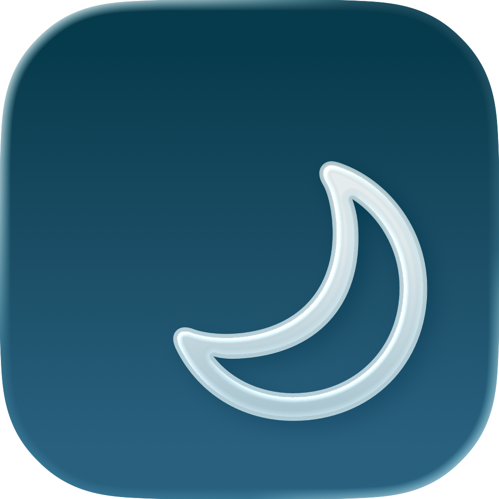

Sleep & CPAP: Feeltracker ST
Track your sleep patterns and discover what affects your sleep quality. Simple sleep time logging with AI-powered insights and Apple Health integration to help you get better rest.

Free download • iPhone, iPad & Mac • iOS 16.0+
Why Track Your Sleep?
Better sleep leads to better health, mood, and productivity
üòå Manage Insomnia
Identify patterns and triggers that disrupt your sleep
⚡ More Energy
Ensure you're getting enough rest for optimal daily performance
üéØ Sleep Goals
Work toward consistent sleep schedules and duration targets
üè• Health Insights
Provide sleep data to doctors investigating health issues
üìà Track Improvements
See how lifestyle changes impact your sleep quality
üß™ Test Strategies
Experiment with different sleep hygiene practices and measure results
Frequently Asked Questions
How much sleep do I need?
Most adults need 7-9 hours of sleep per night, though individual needs vary. The app helps you track your sleep duration and identify your personal optimal amount based on how you feel.
Does this app automatically track sleep?
No. Unlike Apple Watch or other wearables, Sleep Diary requires manual logging. You enter your sleep and wake times each morning. However, you can import sleep data from Apple Health if you use other automatic tracking devices.
Can I log naps?
Yes. You can log multiple sleep periods per day, including naps. Each entry shows duration, and the calendar displays all your sleep/wake times.
What's the difference between this and Apple Health?
Sleep Diary provides a dedicated interface for sleep tracking with features specifically designed for managing sleep patterns - notes, AI insights, trends, and easy manual logging. It integrates with Apple Health but offers more detailed sleep-focused features.
How does AI help with sleep insights?
When you add notes about your day (e.g., "had coffee at 8pm" or "exercised in the morning"), AI analyzes these over time to show correlations with your sleep duration and quality. This helps identify what promotes or disrupts good sleep.
Can I share sleep data with my doctor?
Yes. Export your sleep history as PDF or Excel reports to share with healthcare providers. This is particularly useful if you're being evaluated for sleep disorders or insomnia.
Does it track sleep quality or just duration?
The app primarily tracks sleep duration (hours slept) based on your logged sleep and wake times. You can add notes about sleep quality, dreams, or how rested you feel, which helps with qualitative tracking.
Is there a reminder to log sleep?
Yes. You can set daily reminders to log your sleep times. Many users set a morning reminder to prompt them to record the previous night's sleep.
What Users Are Saying
Real reviews from the App Store
"I was so surprised that my Sleep doctor was trying to give me pieces of paper to record my sleep hours with no way to even collate them!? When I asked for an app, they suggested consensus Sleep Diary, which is useless. Luckily I found this app and I immediately asked my Sleep doctor to start recommending it. I also appreciate how responsive the developer is. Clearly this person wants to improve lives. THANK YOU!!"
- Jbobthebuilder
"First off, please let me say, ignore the username that you see on here for me. That was an error I made early on and can't seem to change without a Mac computer, according to Apple. Now getting down to reviewing this app. This app is awesome for monitoring your sleep habits, time and being able to make notes for future reference. It's simple and easy to use. I had a suggestion, something I was hoping to have changed, and the app developer Gaurav was absolutely amazing!! I reached out to him, and he got back to me within minutes and within days he actually added my suggestion! I highly recommend using this to keep a record of your sleep patterns. And it's absolutely worth subscribing to. Gaurav Sharma, you are a rockstar!!"
- Absolutely Annoyed!
"I needed something to help with sleep tracking as I was starting CPAP therapy back in November 2022. This app has been great at keeping me accountable to a schedule and looking at my progress. I can track hours slept, dreams I have had, patterns of sleep as well as other data that I want to review. Only issue is sometimes App does not open right away on my IPAD and have to force close it and then re-open it. Update - have used app 400 nights now and it shows me progress I've made in my CPAP therapy and a lot of useful insights!"
- Gadget guy Fl
"i try to log 0 hrs of sleep and it won't save my tracking. Also the questions don't allow for tracking 0 sleep, with questions like 'how long did it take to fall asleep' and no option to say you haven't slept. Edit: Yes I see how to log it correctly now, thank you for responding"
- ha Anzy
"Hi I used this app a couple years ago, is there a way to restore my data?"
- Someonelikemeisme
Start Improving Your Sleep Tonight
Better rest is just a few taps away